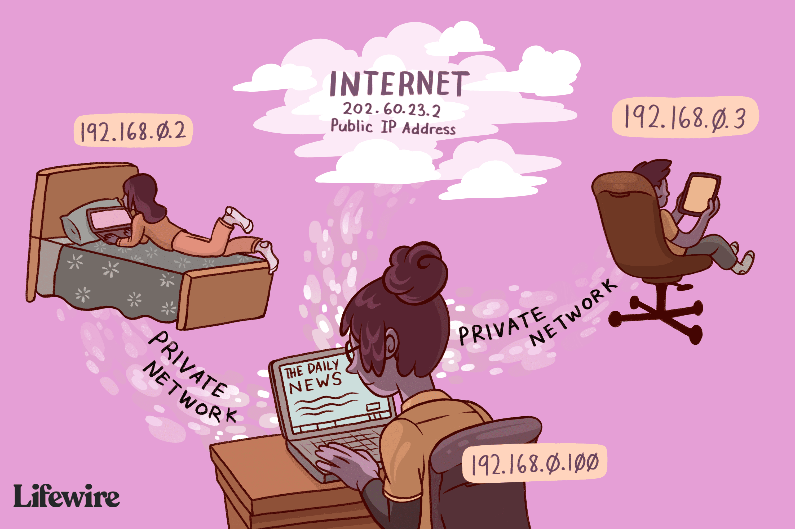
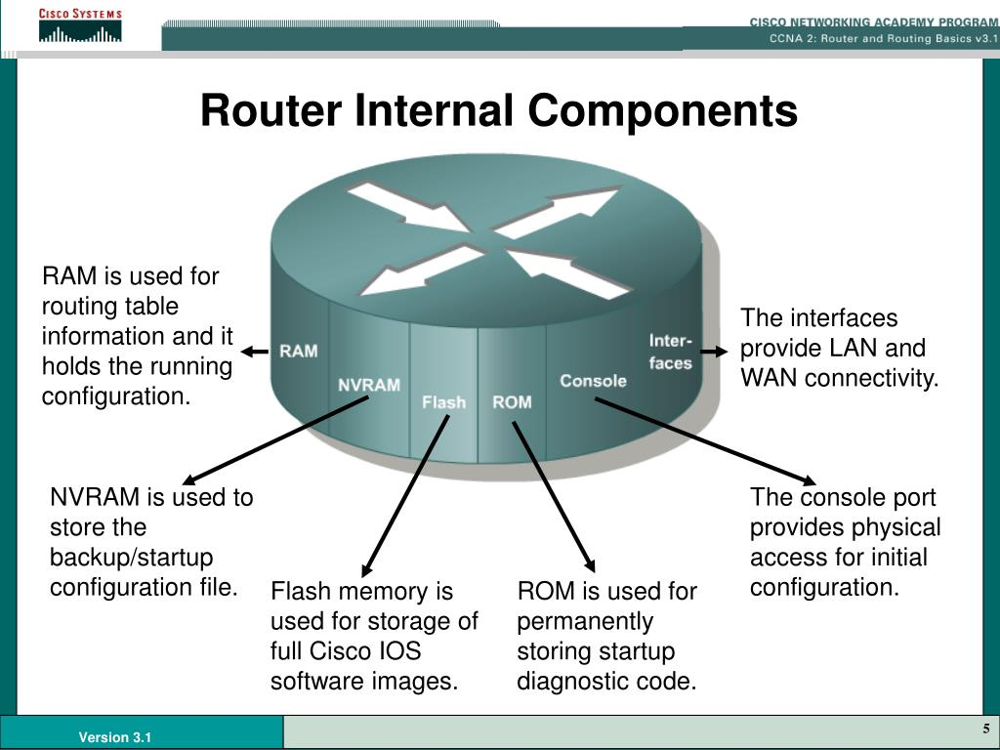

1.IP Addresses
Definition
An IP address is a unique address that identifies a device on the internet or a local network. IP stands for "Internet Protocol," which is the set of rules governing the format of data sent via the internet or local network.
IP addresses are expressed as a set of four numbers — an example address might be 192.158.1.38. Each number in the set can range from 0 to 255. So, the full IP addressing range goes from 0.0.0.0 to 255.255.255.255.
Example
In the video, (The Internet - Wires, Cables, WIFI Part 2), the speaker states "Visiting a website is really just your computer asking another computer for information. Your computer sends a message to the other computer's IP address, and it also sends along its origin address. So the other computer knows where to send it through response." 02:29 .
Why we use IP Addresses?
The main reason why IP addresses are used is that it handles the logical routable connection from both computers to computer AND network to network.

2.Packets
Definition
A packet is a small amount of data sent over a network, such as a LAN or the Internet. Similar to a real-life package, each packet includes a source and destination as well as the content (or data) being transferred. When the packets reach their destination, they are reassembled into a single file or another contiguous block of data. While the exact structure of a packet varies between protocols, a typical packet includes two sections — a header and payload.
Example
Every Web page that you receive comes as a series of packets, and every e-mail you send leaves as a series of packets. Networks that ship data around in small packets are called packet-switched networks.
Why we use Packets?
First, the network can balance the load across various pieces of equipment on a millisecond-by-millisecond basis. Second, if there is a problem with one piece of equipment in the network while a message is being transferred, packets can be routed around the problem, ensuring the delivery of the entire message.

3.Routing
Definition
Network routing is the process of selecting a path across one or more networks. The principles of routing can apply to any type of network, from telephone networks to public transportation. In packet-switching networks, such as the Internet, routing selects the paths for Internet Protocol (IP) packets to travel from their origin to their destination. These Internet routing decisions are made by specialized pieces of network hardware called routers.
Example
A router provides you with internet access by connecting your LAN with the Internet.
Why we use Routing?
A router helps you connect multiple devices to the Internet and connect the devices. Also, you can use routers to create local networks of devices. These local networks are useful if you want to share files among devices or allow employees to share software tools. If you don’t have routers, your business's data won’t get directed to the right place. For example, if you'd like to print a document, you need a router to help get that document to a printer—not to another computer or a scanner.
